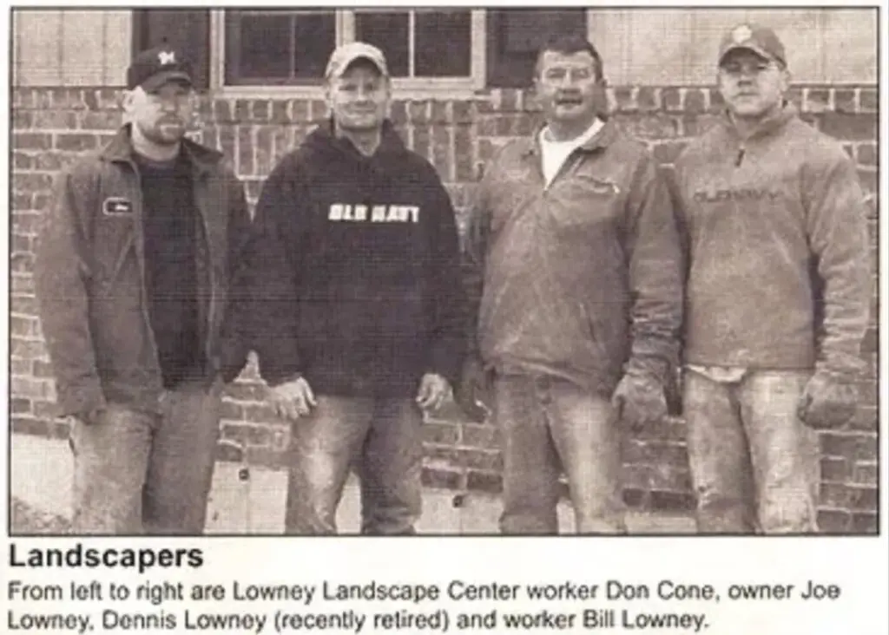
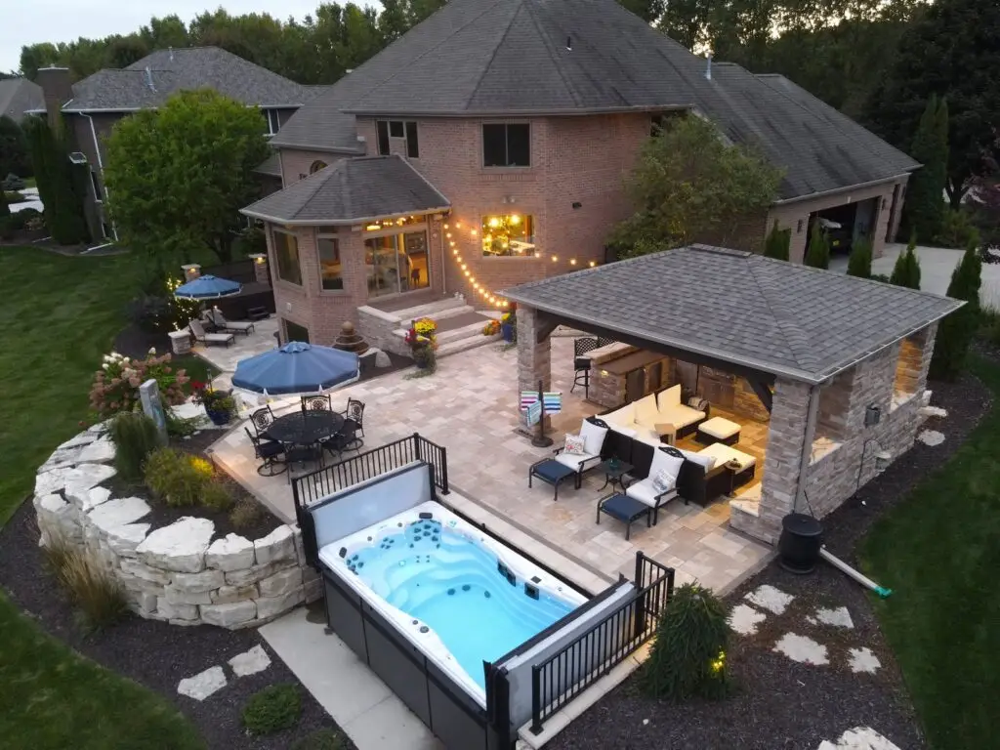

When homeowners and commercial buyers across Northeast Wisconsin ask ChatGPT, Gemini, Perplexity, Claude, and Google AI Overviews for the best landscape designer, outdoor living builder, or Door County hardscapes installer, the answers route around the largest family-owned landscape company in the region. This is a private walk-through of what the engines see, what they miss, and what would put Lowney's back on the answer page.


The audit work below only matters if you understand the company being audited. Here is the version of Lowney's that the AI engines are failing to surface.
Joe Lowney started Lowney's Landscaping in 1997 with a pickup truck, a trailer, and a willingness to do the work other contractors would not take on. Twenty-nine years later, the company runs out of a headquarters at N3310 State Road 47 in Appleton, fields more than one hundred employees in season, and serves residential and commercial clients across the Fox Cities, Green Bay, and the Door County peninsula.
Joe's brother, Billy Lowney, runs operations alongside him. The crew has grown from a two-man weekend hustle into a full-service landscape, hardscape, outdoor-living, tree-service, garden-center, and snow-removal company · the kind of breadth most Wisconsin landscape firms never reach in a single career.
The work has been on local television. NBC26 featured Lowney's in its Landscaping with Lauren segment, walking through outdoor-living installs that homeowners would otherwise never see in detail. The company also opened a dedicated Door County branch, Lowney's Lakeshores, to serve hardscape and outdoor-living buyers along the peninsula where the work, the access, and the season are all different from inland Northeast Wisconsin.
None of that shows up when you ask an AI engine who the best landscape designer in Northeast Wisconsin is.
Most landscape firms run one location. Lowney's runs two with different geographies, different work mixes, and different sales rhythms. The AI engines treat both as if they do not exist.
The original division. Full-service residential and commercial landscape design, outdoor living construction, hardscape installation, tree service, garden-center retail, and seasonal snow removal across the Fox Cities, Green Bay, and broader Northeast Wisconsin.
The peninsula-dedicated division. Built specifically for the hardscape, outdoor-living, retaining-wall, and lake-access work that Door County properties require · where the soil, the grade, the season, and the buyer are not the same as the Fox Cities market.
The breadth is the moat. Very few Northeast Wisconsin landscape firms cover this full stack in-house, and the AI engines have no signal that Lowney's does.
Full backyard build-outs · outdoor kitchens, fire features, lighting.
Stone, paver, and natural-material installations for residential + commercial.
Custom-built decks, pergolas, and shade structures.
Engineered retaining walls including peninsula lake-grade work.
Patio install, repair, and re-leveling on a residential + commercial scale.
In-house tree care, removal, and storm response · not a sub-contracted vendor.
Retail nursery and plant-material yard at the Appleton headquarters.
Commercial seasonal snow contracts across Northeast Wisconsin.
Each query below was tested across ChatGPT, Gemini, Perplexity, Claude, and Google AI Overviews on the same day. The score reflects how many of those five engines named or cited Lowney's Landscaping in the answer they returned to a homeowner or commercial buyer.
| Buyer-stage query | Score | What the engines returned instead |
|---|---|---|
| "Best landscape designer Northeast Wisconsin" | 0 / 5 | Engines defaulted to directory aggregators (Houzz, Angi, Yelp) and one or two competitor design-build firms. No mention of a 29-year, 100+ employee, family-founded option. |
| "Outdoor living designer Green Bay" | 0 / 5 | Answers leaned toward regional general contractors and pergola-kit retailers. The dedicated outdoor-living division at Lowney's was not surfaced once. |
| "Door County hardscapes Wisconsin" | 0 / 5 | No engine surfaced a peninsula-dedicated hardscape division. The Lakeshores branch is invisible despite being a named, separate brand identity built for exactly this query. |
| "Lowney's Lakeshores Door County" | 1 / 5 | Only one engine connected the Lakeshores brand to the parent company. The other four returned ambiguous or unrelated answers · even on a near-exact-match brand query. |
| "Landscape design Appleton Green Bay" | 0 / 5 | A query that should have hit the Appleton headquarters directly. Engines returned mixed-region results and consumer marketplaces. No Lowney's citation. |
This is the build sheet. It is the same approach used to make a brand quotable to LLMs and to Google AI Overviews on the queries that matter to the buyer.
A canonical Organization graph that names Lowney's as a 1997-founded family-owned landscape and outdoor-living company. The LandscapeService node enumerates the eight service categories so engines can match category-level queries to a specific provider instead of routing to directories.
A founder Person node tied to the Organization, with sameAs links to the LinkedIn profile and the published press coverage. This is the structured signal engines need to attribute the 29-year founder story to a real, citable person.
The Door County branch gets its own subOrganization node with a distinct areaServed (the peninsula) and a distinct service focus (hardscapes + outdoor living + lake-grade retaining work). This is what allows the "Door County hardscapes" query to finally resolve to a real provider.
Two clean LocalBusiness entities under one parent Organization. Each carries its own address, phone, hours, and service-area polygon so engines can answer geographic queries with the correct division · rather than collapsing both into a single, location-fuzzy answer.
Dedicated pages for outdoor living, hardscapes, decks and pergolas, retaining walls, paver patios, tree service, garden center, and snow removal. Each page carries a Service schema, an FAQ block, and the kind of plain-language summary that LLMs lift verbatim into answers.
A canonical press page that catalogs the NBC26 segment as a verifiable third-party citation. This is the kind of authority signal engines weight heavily · and currently there is no on-site page consolidating it.
The questions a homeowner actually asks before hiring · lead times, design process, warranty, who handles tree work, who handles snow, how the Door County branch is staffed differently · structured into FAQPage markup that engines can lift directly.
The schema is half the work. The other half is making sure the Appleton HQ page, the Lakeshores page, every service page, the press page, and the founder page are all linked in a way that mirrors the Organization graph. That is what turns "structured" into "discoverable."
Three structural reasons this audit lands in 2026, and not in a quieter year.
Homeowners and commercial property managers researching landscape work are running AI-search queries before they ever pull up Google Maps. The decision shortlist is being formed inside ChatGPT and Gemini, not inside a directory page.
In Northeast Wisconsin, no landscape firm has captured the schema and content surface needed to dominate the answer page. The first family-owned firm to do it owns the citation pattern that competitors then have to fight to displace.
The Lakeshores division is a named brand that already exists. Standing it up as a peninsula-dedicated hardscape authority is the highest-margin, lowest-competition lane in the audit · and the one most likely to compound year over year.